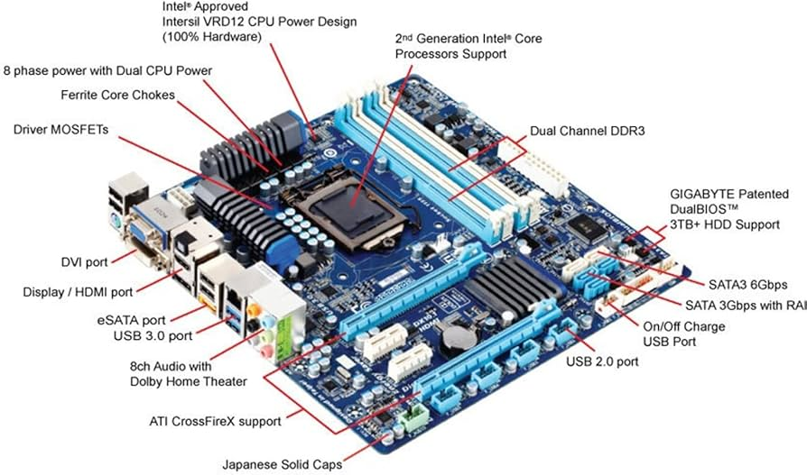

L'architettura della scheda madre definisce come i vari
componenti di un computer interagiscono tra loro. Le schede
madri moderne offrono una varietà di funzioni e connessioni per
ottimizzare le prestazioni.
-
CPU Socket: Il punto di connessione per il
processore, progettato per specifici modelli di CPU.
-
Chipset: Gestisce il flusso di dati tra la
CPU, la memoria e i dispositivi di archiviazione.
-
Slot RAM: Permettono di installare la
memoria volatile (RAM) per l'elaborazione veloce dei dati.
-
Porte di Espansione: Come PCIe, utilizzate
per schede grafiche, schede di rete e altre periferiche.
-
Connettori di Alimentazione: Forniscono
energia a tutti i componenti della scheda madre.
La scheda madre è il cuore pulsante di ogni computer, fornendo
la base per l'integrazione di tutti i componenti hardware.
L'evoluzione delle schede madri continua a offrire nuove
funzionalità per soddisfare le esigenze moderne.